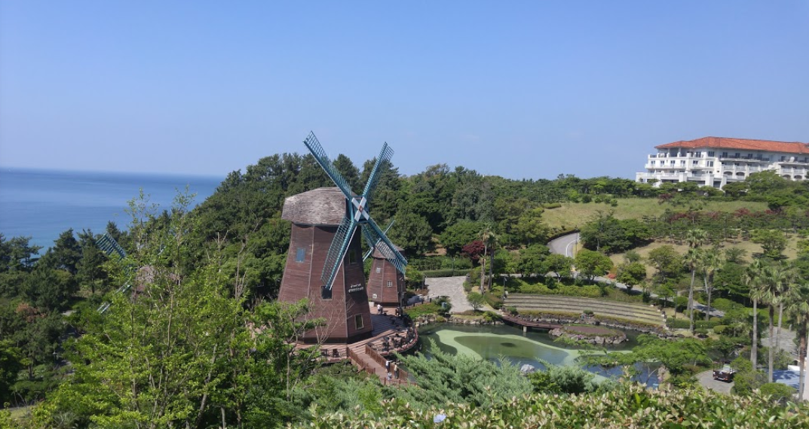

중문 관광단지

중문관광단지는 제주의 독특한 자연경관과 지리적 조건을 활용하여 국제적인 휴양지로 개발하고자 제주도종합개발계획에 의하여
한국관광공사가 1978년부터 제주특별자치도 서귀포시 중문,대포,색달동 일원에 조성하였습니다.
2018년 현재 중문관광단지는 하얏트호텔,신라호텔, 롯데호텔, 스위트호텔, 하나호텔, 씨에스호텔, 켄싱턴호텔, 부영호텔,
부영콘도, 한국콘도 등 숙박시설 10개소와 중문골프장(18홀), 제주국제컨벤션센터·제주국제평화센터가 운영되고 있으며,
천제연폭포,주상절리대,여미지식물원, 테디베어뮤지엄, 믿거나말거나박물관, 퍼시픽랜드, 박물관은 살아있다,
초콜릿랜드,플레이케이팝 등 관광시설이 있습니다.
찾아가는길